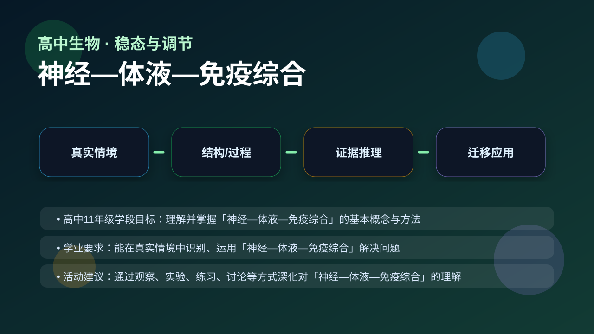
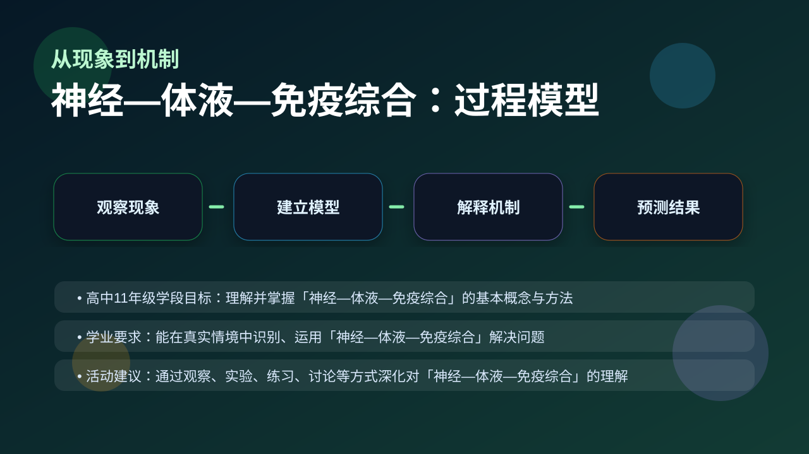
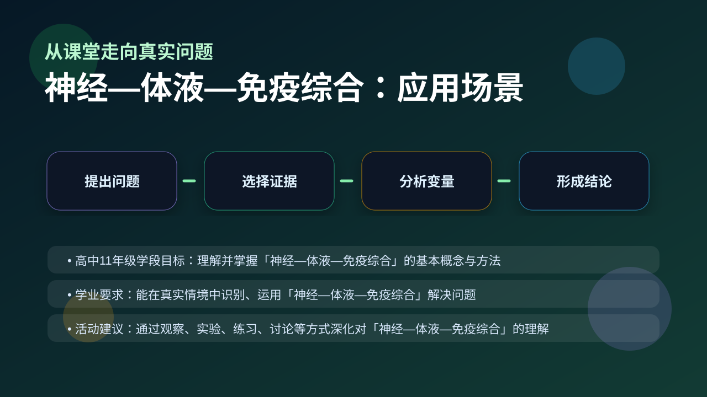

Gallery v1.0.0 · skill v7.14
机体怎样通过反馈调节维持内环境稳定？

已经知道：你已经会背一些生物学名词，也见过实验现象、曲线和图示。
但问题是：高中生物真正考查的是能否在新情境中说明变量、机制和证据，而不是复述一句定义。
所以学：本课把 神经—体液—免疫综合 放进一个研究员式的真实任务：先看现象，再拆机制，最后用证据完成解释。
先选一个卡点。后面的例子、互动和 AI 学伴都会围绕它给你最小提示。
选择或输入后，本课会围绕你的问题展开。
学习 神经—体液—免疫综合 前，先判断：一个合格的生物学解释，是否只要说出名词定义就够了？
现象入口：病原体入侵后，机体会先产生非特异性防线，随后启动特异性免疫反应。
机制解释：免疫调节由免疫器官、免疫细胞和免疫活性物质共同完成，体液免疫和细胞免疫分工协作。
证据抓手：证据来自抗体水平变化、记忆细胞二次应答、疫苗接种效果和炎症反应。
变量线索：抗原类型、抗体浓度、T细胞/B细胞活化、记忆细胞数量。做题时先找变量，再判断机制，最后写证据。
高中11年级学段目标：理解并掌握「神经—体液—免疫综合」的基本概念与方法
学业要求：能在真实情境中识别、运用「神经—体液—免疫综合」解决问题
活动建议：通过观察、实验、练习、讨论等方式深化对「神经—体液—免疫综合」的理解

先描述题干现象或数据变化。
区分结构、过程、变量和层级。
用机制说明为什么会这样。
换情境预测结果并给证据。
情境：疫苗不是直接杀死病原体，而是训练免疫系统形成记忆。
作答路径：第一句写可观察现象，第二句写本课机制，第三句写证据或变量关系。例如先说明“题干中哪个指标变化”，再说明“这个变化对应哪个结构或过程”，最后补上“为什么这个证据能支持结论”。
评分提醒：只有结论没有证据，通常只能得到识记分；能把 神经—体液—免疫综合 和变量关系连起来，才是高中生物的解释性答案。
旋转 3D 分子模型，观察结构层级。请把结构特点和 神经—体液—免疫综合 中的功能解释对应起来：结构不是装饰，而是功能的证据。
💡 操作提示：拖拽旋转模型，思考“形状、空间位置、结合位点”如何影响生命活动。
拖动滑块模拟 抗原类型、抗体浓度、T细胞/B细胞活化、记忆细胞数量 的改变，观察系统响应曲线。请把曲线变化翻译成 神经—体液—免疫综合 的机制解释。
拖动滑块后，解释变量如何影响结果。
把抗体、抗原、疫苗和抗生素混为一谈，是免疫题常见错误。
只说“增加/减少”不够，要写清改变的是 抗原类型、抗体浓度、T细胞/B细胞活化、记忆细胞数量 中的哪一个。
没有实验现象、曲线趋势或结构证据，答案就像猜测。
判断题：只要背出 神经—体液—免疫综合 的定义，就能解决相关实验探究题。
错因诊断：如果答案只有一个名词，说明你还停留在识记层。真正的理解必须能解释“为什么”、预测“如果条件改变会怎样”，并能指出证据来自哪里。
视频用语音和动态画面回顾本课主线：问题情境 → 机制模型 → 证据判断 → 迁移应用。

解释过敏、疫苗、器官移植排斥和免疫缺陷，都要分清免疫环节。
提交后会检查你的解释是否包含现象、机制和变量。
如果学生只说出概念名称，继续追问：题干里哪个证据最关键？这个证据对应分子、细胞、个体还是生态系统层级？如果改变 抗原类型、抗体浓度、T细胞/B细胞活化、记忆细胞数量 中的一个条件，结果会怎样？这三问能把答案从背诵推进到科学解释。
用一句话说清 神经—体液—免疫综合 的核心机制，必须包含“变量”和“结果”。
给一个实验或曲线，判断哪条证据支持你的解释。
换到健康、农业、生态或生物技术情境，设计一个可检验的问题。
下面哪一种答案最符合高中生物的科学解释要求？
学习小结：神经—体液—免疫综合 的关键不是记住一个孤立词，而是能把生命现象放进层级、机制和证据的框架中解释。下次遇到陌生题，先问：变量是什么？机制在哪里？证据支持哪一步？
神经调节通过反射弧实现，其基本方式是反射。反射弧包括感受器、传入神经、神经中枢、传出神经和效应器五个部分。例如，当手碰到烫的物体时，皮肤中的温度感受器受到刺激，产生神经冲动，通过传入神经传到脊髓中的神经中枢，再通过传出神经传到手臂肌肉，引起缩手反应。这个过程是快速的、自动的，不需要大脑的思考。另一个例子是膝跳反射，医生用小锤轻敲膝盖下方的韧带，腿部会不由自主地踢出，这也是一个简单的反射。
体液调节主要通过激素来实现，激素由内分泌腺分泌，通过血液运输到靶器官或靶细胞。例如，胰岛素由胰腺中的胰岛β细胞分泌，能够降低血糖水平；而胰高血糖素由胰岛α细胞分泌，能够升高血糖水平。这两种激素共同调节血糖的平衡。另一个例子是甲状腺激素，由甲状腺分泌，调节新陈代谢和生长发育。青春期时，生长激素的分泌增加，促进骨骼和肌肉的生长。体液调节的特点是作用缓慢但持久。
免疫系统具有防御、监视和清除三大功能。防御功能是指免疫系统能够识别和消灭外来病原体，如细菌和病毒。例如，当流感病毒侵入人体时，免疫系统会产生抗体来中和病毒。监视功能是指免疫系统能够识别和清除体内突变的细胞，防止肿瘤的发生。清除功能是指免疫系统能够清除衰老或损伤的细胞，维持内环境的稳定。例如，巨噬细胞能够吞噬和消化衰老的红细胞。免疫系统的这些功能共同维持了人体的健康。
神经调节和体液调节在人体内常常协同作用。例如，在应激状态下，交感神经兴奋，肾上腺髓质分泌肾上腺素，导致心跳加快、血压升高、血糖升高，为身体提供更多的能量。另一个例子是体温调节，当环境温度降低时，皮肤中的冷觉感受器受到刺激，通过神经传导到下丘脑，下丘脑通过神经和体液调节，使皮肤血管收缩、汗腺分泌减少，同时甲状腺激素分泌增加，提高代谢率以维持体温。
免疫调节与神经—体液调节密切相关。例如，压力状态下，神经系统通过下丘脑—垂体—肾上腺轴（HPA轴）调节免疫系统的功能。长期的压力会导致糖皮质激素分泌增加，抑制免疫系统的功能，使人更容易感染疾病。另一个例子是细胞因子，免疫细胞分泌的细胞因子可以影响神经系统，如白细胞介素-1（IL-1）能够作用于下丘脑，引起发热反应。这种相互作用体现了神经—体液—免疫网络的复杂性。
以过敏反应为例，过敏原进入人体后，刺激B细胞产生IgE抗体，IgE与肥大细胞结合。当再次接触过敏原时，肥大细胞释放组胺等物质，引起血管扩张、平滑肌收缩等反应。这一过程涉及免疫系统的过度反应，同时也受到神经和体液的调节。例如，组胺可以刺激神经末梢，引起瘙痒感；而糖皮质激素可以抑制过敏反应。另一个例子是自身免疫病，如类风湿性关节炎，免疫系统错误地攻击自身组织，神经和体液调节的失衡可能加剧病情。
神经—体液—免疫调节的异常会导致多种疾病。例如，糖尿病是由于胰岛素分泌不足或靶细胞对胰岛素不敏感，导致血糖调节失衡。另一个例子是抑郁症，研究发现抑郁症患者的下丘脑—垂体—肾上腺轴功能亢进，导致糖皮质激素水平升高，影响免疫系统功能。免疫系统的异常也可能影响神经系统，如多发性硬化症是一种自身免疫病，免疫系统攻击神经髓鞘，导致神经传导障碍。这些疾病的发生和发展都与神经—体液—免疫网络的失调有关。
近年来，神经—体液—免疫调节的研究取得了许多进展。例如，科学家发现肠道微生物群可以通过神经和免疫途径影响大脑功能，称为“肠—脑轴”。另一个例子是免疫检查点抑制剂在癌症治疗中的应用，通过阻断免疫抑制信号，激活免疫系统攻击肿瘤细胞。这些研究不仅深化了我们对神经—体液—免疫网络的理解，也为疾病的治疗提供了新的思路。未来，随着研究的深入，神经—体液—免疫调节的机制将更加清晰，为人类健康带来更多福音。
1. 什么是反射弧？请举例说明。2. 胰岛素和胰高血糖素的作用分别是什么？3. 免疫系统的三大功能是什么？
1. 描述神经调节和体液调节的协同作用的一个例子。2. 免疫调节与神经—体液调节有什么关系？3. 神经—体液—免疫调节的异常可能导致哪些疾病？
错因：学生可能误认为神经调节和体液调节是独立的系统。误区：忽视神经—体液—免疫网络的整体性。诊断：通过实例分析，帮助学生理解三者之间的相互作用和协同关系。
迁移挑战：设计一个实验，探究压力对免疫系统功能的影响。要求包括实验目的、材料、步骤和预期结果的分析。